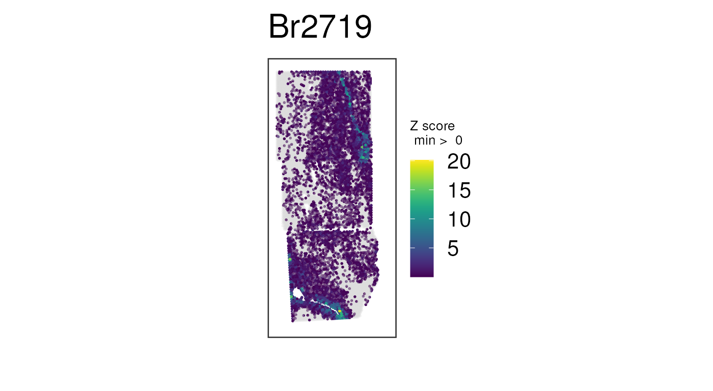

Miscellaneous notes
Nicholas J. Eagles
Lieber Institute for Brain Developmentnickeagles77@gmail.com
Leonardo Collado-Torres
Lieber Institute for Brain DevelopmentCenter for Computational Biology, Johns Hopkins UniversityDepartment of Biostatistics, Johns Hopkins Bloomberg School of Public Healthlcolladotor@gmail.com
18 October 2024
Source:vignettes/misc.Rmd
misc.RmdThis vignette has some extra companion notes to the Introduction
to visiumStiched main vignette.
Load data
Let’s load the spatialLIBD package we’ll use in this
vignette.
Now we can download the example visiumStitched_brain
data that includes normalized logcounts. We’ll define the
same example white matter marker genes.
## Grab SpatialExperiment with normalized counts
spe <- fetch_data(type = "visiumStitched_brain_spe")
#> 2024-10-18 14:29:29.554226 loading file /github/home/.cache/R/BiocFileCache/25739445980_visiumStitched_brain_spe.rds%3Frlkey%3Dnq6a82u23xuu9hohr86oodwdi%26dl%3D1
## Check that spe does contain the "logcounts" assay
assayNames(spe)
#> [1] "counts" "logcounts"
## Define white matter marker genes
wm_genes <- rownames(spe)[
match(c("MBP", "GFAP", "PLP1", "AQP4"), rowData(spe)$gene_name)
]Geometric transformations notes
As a SpatialExperiment, the stitched data you
constructed with visiumStitched::build_SpatialExperiment()
may need to be rotated or mirrored by group. This can be done using the
SpatialExperiment::rotateObject() or
SpatialExperiment::mirrorObject() functions. These
functions are useful in case the image needs to be transformed to reach
the preferred tissue orientation.
## Rotate image and gene-expression data by 180 degrees, plotting a combination
## of white-matter genes
vis_gene(
rotateObject(spe, sample_id = "Br2719", degrees = 180),
geneid = wm_genes,
assayname = "counts",
is_stitched = TRUE,
spatial = FALSE
)
## Mirror image and gene-expression data across a vertical axis, plotting a
## combination of white-matter genes
vis_gene(
mirrorObject(spe, sample_id = "Br2719", axis = "v"),
geneid = wm_genes,
assayname = "counts",
is_stitched = TRUE,
spatial = FALSE
)
You might want to re-make these plots with
spatial = TRUE so you can see how the histology image gets
rotated and/or mirrored. For file size purposes of this vignette, here
we had to use spatial = FALSE.
A note on normalization
As noted in
the main vignette, library-size variation across spots can bias the
apparent spatial distribution of genes when raw counts are used. The
effect is often dramatic enough that spatial trends cannot be easily
seen across the stitched data until data is log-normalized. Instead of
performing normalization here, we’ll fetch the object with normalized
counts from spatialLIBD, then plot a few white matter genes
as before:
## Plot combination of normalized counts for some white-matter genes
vis_gene(
spe,
geneid = wm_genes,
assayname = "logcounts",
is_stitched = TRUE,
spatial = FALSE
)Recall the unnormalized version of this plot, which is not nearly as clean:
## Plot raw counts, which are noisier
## Same plot we made before, but this time with no histology images
vis_gene(
spe,
geneid = wm_genes,
assayname = "counts",
is_stitched = TRUE,
spatial = FALSE
)
The actual normalization code for this example data is available here.
Merging overlapping spots
In general, we recommend retaining all spots for downstream analysis,
even if that means including multiple spots per array coordinate. We
show that many software tools, such as BayesSpace and PRECAST, can
smoothly handle data in this format. However, given that having multiple
spots at the same array coordinates is atypical in Visium experiments,
we caution that it’s possible some software may break or not perform as
intended with stitched data. We provide the
merge_overlapping() function to address this case.
In particular, merge_overlapping() sums raw counts
across spots that overlap, ultimately producing a
SpatialExperiment with one spot per array coordinate.
colData() information, both discrete and continuous, is
taken from spots where exclude_overlapping is
FALSE. Note that the function can be quite memory-intensive
and time-consuming.
spe_merged = merge_overlapping(spe)